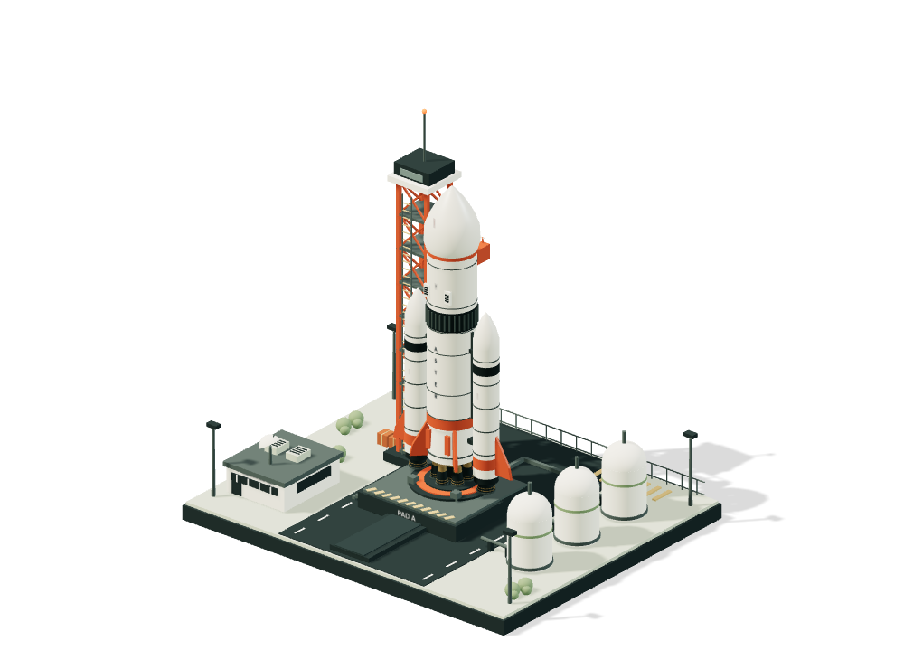
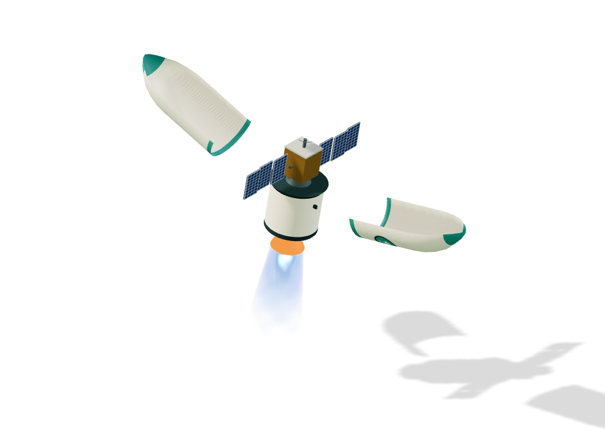
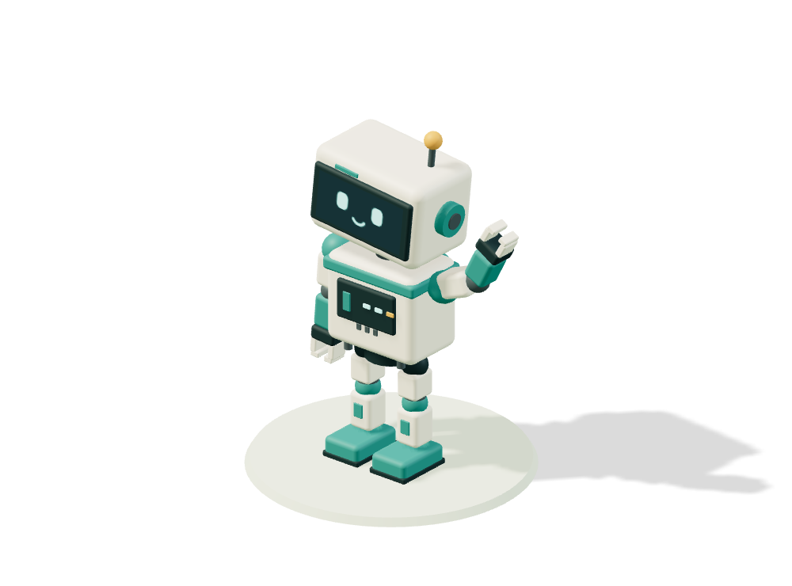
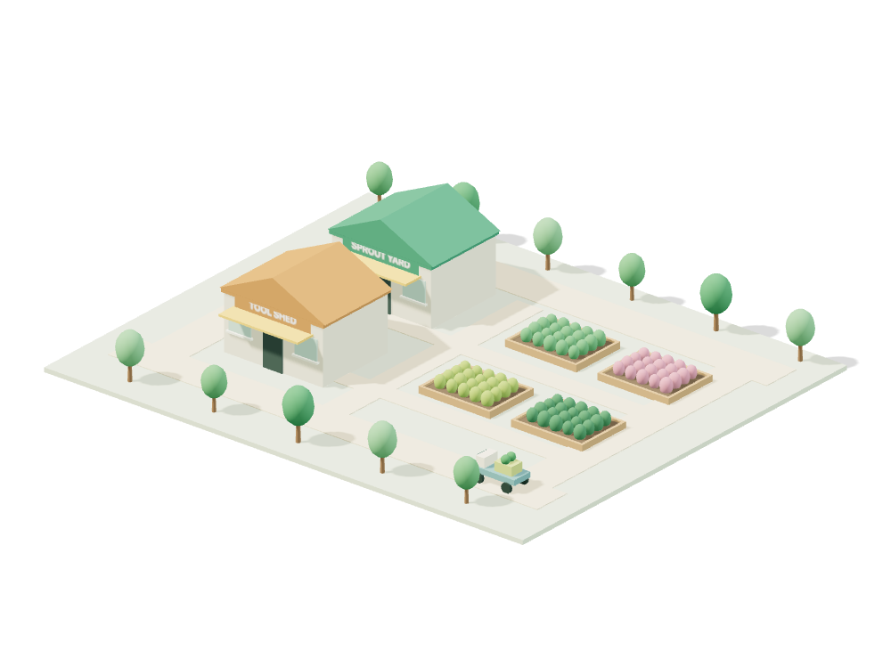

Small worlds.
Big possibility.
Launch a rocket. Make a robot dance. Grow a little garden. Entire worlds, made from code and a little imagination.

Preview imageSimple shapes. Extraordinary little things.
See how they’re madeA little curiosity
goes a long way.
Four worlds to get lost in.
Pick one, play with it, make it yours.
Aster
Ready for liftoff.Count down, fire nine engines, and clear the tower. A miniature launch with a big sense of occasion.

Flight to orbitVela
The sky is just the beginning.Follow a two-stage journey to orbit. Separate the fairing, deploy a satellite, and unfold its solar arrays.

Articulated characterRoo
A little robot. A lot of character.Wave hello, take a walk, or break into a dance. Give Roo a new color and download its animated model.

Miniature simulationSprout Yard
Good things take a little growing.A garden center in motion. Inspect the planting beds, grow something green, and watch the carts go by.
Got a world
in mind?
Start with an idea. The procedural-isometric-worlds skill helps Codex turn it into a little place you can explore.
Read the skillBring the skill into Codex.
Clone the repository into your skills folder.
git clone https://github.com/gurungabit/procedural-isometric-worlds.git ~/.codex/skills/procedural-isometric-worldsThen let your imagination do its thing.
Try this in Codex, or describe your own world.
Use $procedural-isometric-worlds to build a tiny recycling depot with moving conveyors, sorting bins, and delivery trucks.